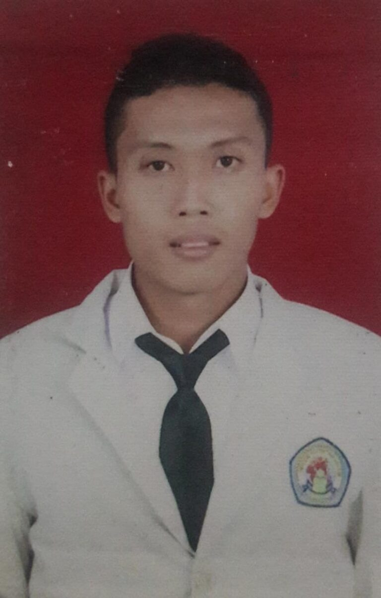

Assalamu'alaikum Warahmatullah Wabarakaatuh
,Salam sejahtera bagi kita semua.
Puji Syukur Alhamdulillah kita
panjatkan ke hadirat Allah SWT,
atas berkah dan limpahan rahmat
dan karuniaNya sehingga kita semua
dapat beraktifitas menghadirkan
website kepada seluruh civitas
akademik serta masyarakat luas.
Website yang dapat memberikan
informasi baik untuk peserta
didik, guru, pegawai, para orang
tua, alumni dan masyarakat yang
membutuhkan. Untuk itu saya
mengucapkan terimakasih kepada
seluruh yang terlibat dalam
pengembangan website ini.
Website ini, berisikan gambaran
aktifitas dan budaya organisasi
yang tumbuh dan berkembang secara
terus menerus dalam upaya
meningkatkan mutu pendidikan
di SMK Pancasila Mojowarno.
Kekompakan dan kolaborasi yang
kuat antara guru, siswa, para
orang tua dan alumni diharapkan
mampu membekali kompetensi
lulusannya, agar dapat memenangi
setiap kompetisi dalam
kehidupannya.
Pendidik harus siap setiap saat
dalam menghadapi perkembangan
jaman dan juga khususnya
perkembangan teknologi sehingga
mampu menyajikan pelayanan yang
maksimal kepada peserta didik,
setiap peserta didik harus mampu
menjadi pribadi yang cerdas,
menginternalisasi kecerdasannya
dalam perilaku akhlaq mulia
serta menjadi pribadi tangguh
dalam menghadapi berbagai
dinamika kehidupan.
Mengasah kehalusan budi pekerti
dengan kepedulian menjadikan
lulusannya sebagai insan
paripurna.Semoga Allah SWT
meridhoi semua niat kita dan
melindungi keluarga besar SMK
Pancasila Mojowarno.
Wassalamu’alaikum Warahmatullah Wabarakaatuh
FERRY KURNIAWAN, S.Pd
Kepala Sekolah


|